Four days on from 7/6, the plant continues progressing normally through bulking (day ~37) — colas are visibly fatter and frostier, pistil clusters denser, and the canopy is fully solid with no net gaps left in the overhead shot. Deep green holds through the tops and new growth in every quadrant, and none of the eleven photos — including four close-up macro shots — show stippling, webbing, powdery mildew, or bud rot. The interior-fan yellowing flagged 7/1 and 7/6 has progressed further: the top-right region shot (img 6) shows a fan leaf that has gone essentially whole-leaf yellow, not just tip/margin fading as on 7/6 — the most advanced single case logged in this series so far. It remains confined to an older, shaded, lower-canopy leaf with green colas and green new growth directly above it, which keeps it on the expected side of wk5–6 bulking senescence per the knowledge base, but the severity step-up from "tips" to "whole leaf" is a real, measurable change and is called out plainly rather than folded back into "stable." Soil surface/perlite mulch reads dry in both the canopy and side-profile shots; last watering in the log was 7/8.
TLDR — A manual close-up check-in comparing this 7/10 set region-by-region to the 7/6 manual report, and a call on OK / improving / declining. Eleven photos this time — the most detailed set yet: overall canopy, side profile, four quadrants (bottom-left, top-left, top-right, bottom-right), center, bottom-center, two additional macro close-ups of the mid/top-right area, and a macro close-up of the front-left buds.
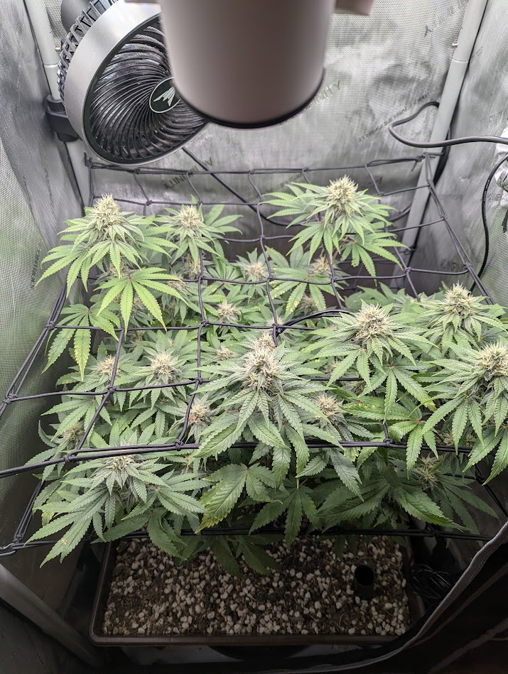
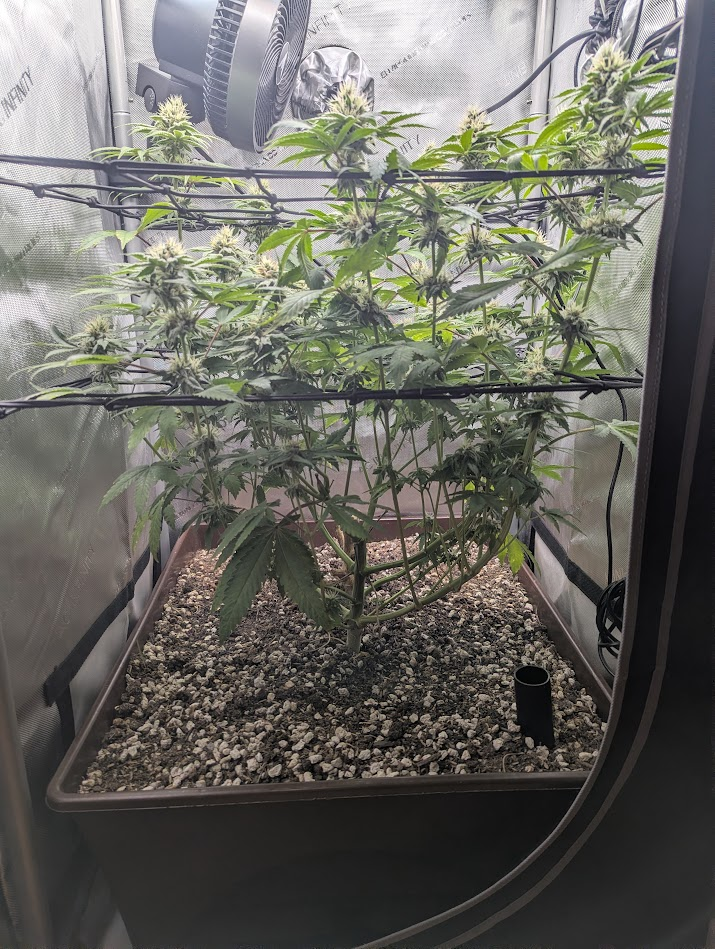
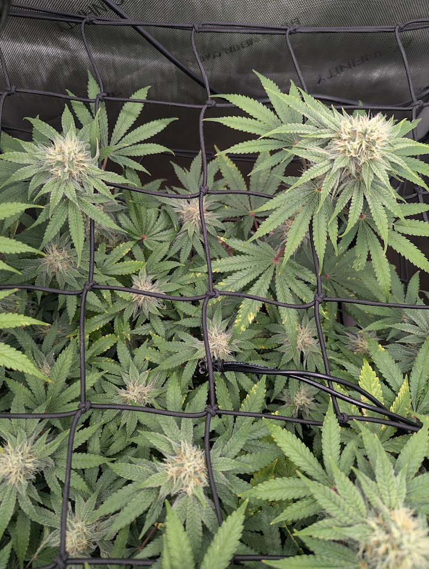
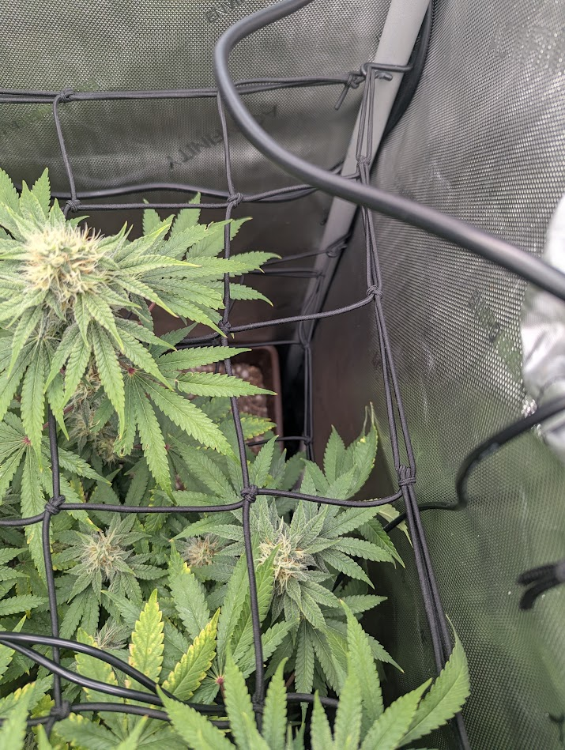
This is an estimate, not a precise count — roughly flat to slightly up from 7/6's ~28–40, consistent with bulking (existing sites fattening rather than many new sites forming). Method: counting distinct white/cream-pistil flowering tops in the overhead canopy shot (img 1) and cross-checking against the bottom-center overview (img 8) and the close-up crops, using the scrog squares as a reference. Overlap and occlusion still make an exact number unreliable from a photo — treat the trend, not the absolute figure, as the signal. For a true count, tally physically at a defoliation or count occupied scrog squares. (See manual_report_format.md.)
| Signal | 7/6 (day ~33) | 7/10 (day ~37) | Trend |
|---|---|---|---|
| Pistils / bud swell | Fatter, frostier tops; pistil clusters swelling | Further fattened; pistils on the main colas visibly denser and beginning to cream/amber at the tips on a few tops | ↑ better |
| Canopy fill | Near-solid canopy; gaps filled, buds occupying the squares | Fully solid overhead — no bare net squares visible at all in img 1 | ↑ better |
| Leaf color (tops / new growth) | Deep green through tops + new growth | Still deep green on tops and new growth across every quadrant | → steady |
| Leaf color (interior) | Yellow tips/margins on several mid-canopy fans | Same fans area now shows at least one fully yellow fan leaf (img 6), plus continued tip/margin fading elsewhere (img 5, img 9) — a step up in severity, not just extent | ↑ progressing (watch) |
| Front-left top cola color | Not separately photographed | Noticeably lighter lime-green than the rest of the canopy (img 11) — this cola sits directly under the clip fan, the same zone flagged for high PPFD on 6/22/6/24 | new observation (watch) |
| Posture / turgor | Turgid, flat, no wilt | Same — turgid and flat in all 11 shots, no clawing or tacoing | → steady |
| Pests / mold / PM | Clean in all 8 shots | Clean in all 11 shots, including 4 true macro close-ups (img 9, 10, 11 and the flag crop) — no stippling, webbing, powdery coating, or bud-rot mush anywhere | → clear |
| Watering | Soil surface drying; 4 days since 7/2 tea/top-dress | Soil/perlite surface reads dry again (img 1, img 2); grow-context log shows a top-dress + ~1 gal top-water on 7/8, so this is 2 days post-feed | → due to watch |
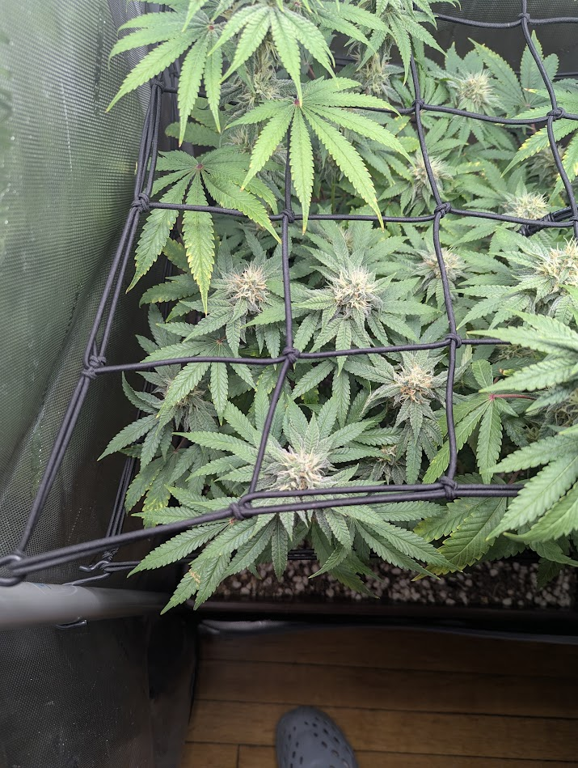
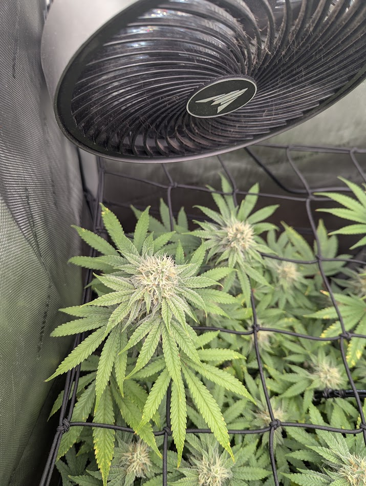
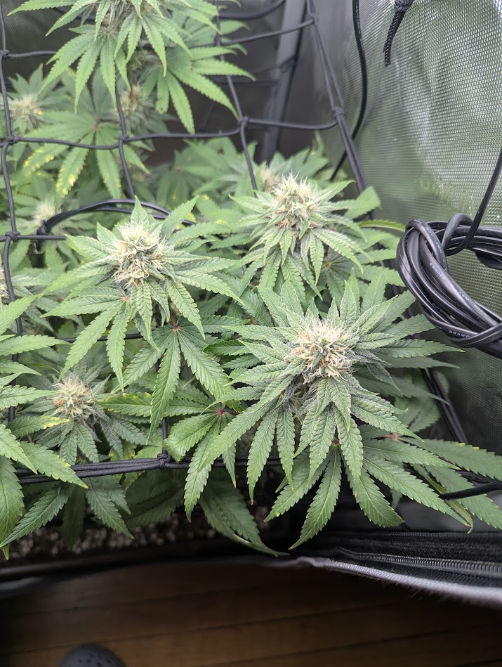
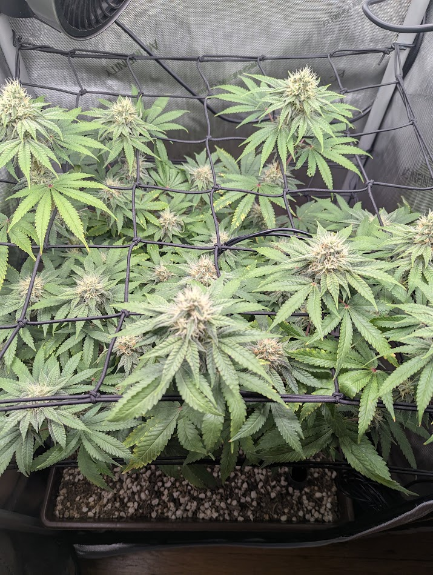
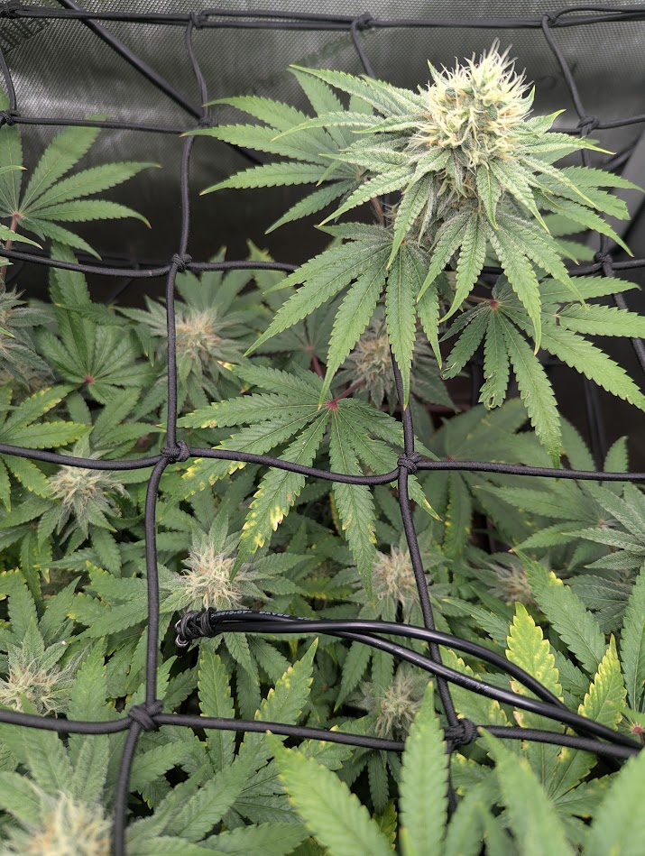
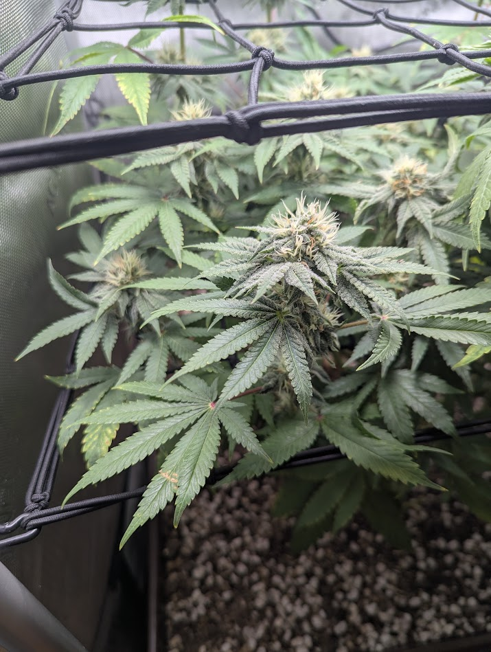
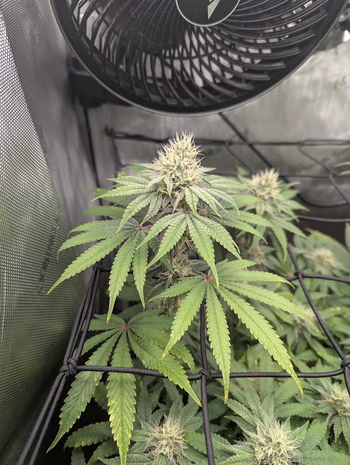
Ten of eleven shots read clean: deep green through the tops, fattening pistil-dense colas, turgid flat leaves, and no webbing, stippling, powder, or gray fluff anywhere, including at true macro magnification (img 9–11). Two items carry forward or newly appear this round, both addressed in Flags below: the advanced interior-fan yellowing in img 6, and the lighter leaf color on the front-left top cola in img 11.
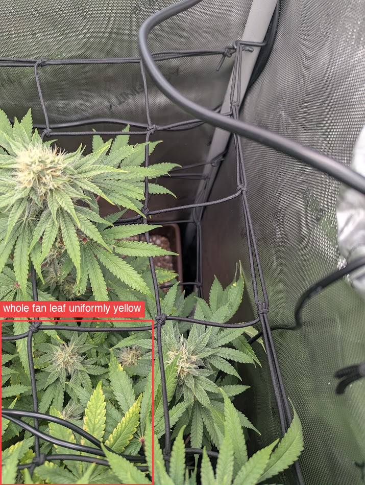
Pattern read: the yellowing on this leaf reads as fairly uniform across the blade rather than sharply interveinal, which per the mobility/pattern framework points toward nitrogen-pattern fade (uniform, whole-leaf, old/lower leaf) over a magnesium (interveinal) or potassium (edge-only) signature — but a photo cannot fully separate these, and interveinal patterning is genuinely hard to judge through the camera's compression at this crop (KB 0202 · Nutrient Deficiencies & ToxicitiesAlways run the framework first (pH/watering, then location). Fixes below assume a synthetic/bottled-nutrient grow; for living soil, see 07 (the remedy is amendments/teas, not a bottle).Covers: Mobility cheat sheet · Mobile nutrients · Immobile nutrients · Toxicities & overfeeding · Hard ruleGrowBuddy knowledge base · 02-deficiencies.md).
Is it "creeping up"? Still no — in altitude, not yet. The affected leaf sits low/interior, at or below the net plane, shaded by colas above it; the cola directly above it in the same frame, and every top/new-growth leaf across all eleven photos, stays deep green. That altitude line is still the whole call: a fully-yellowed old, shaded leaf at day ~37 (into wk5–6 bulking) is on the expected side of normal mid/late-flower fade, where the plant reclaims mobile nutrients from its oldest fans regardless of soil richness (KB 0606 · Grow Cycle — What's Normal WhenKnowing the stage prevents false alarms (e.g., late-flower leaf fade is normal, not a deficiency) and sets expectations.Covers: Stages (germination → seedling → veg → flower: stretch, bud development, bulking, ripening) · Photoperiod vs autoflower · Whole-plant/structural issues · Harvest timing (trichomes)GrowBuddy knowledge base · 06-grow-cycle.md, KB 0707 · Organic / Living Soil / No-TillA living-soil grow is a different system from bottled-nutrient growing, and most generic diagnosis advice gives the wrong fix here.Covers: The core idea · How feeding/correcting works (and what NOT to say) · Diagnosis differences in living soil · Practical no-till setup & routine (real-world basics) · Practical rule for the diagnoserGrowBuddy knowledge base · 07-organic-living-soil.md). But "expected" is not the same as "no longer worth tracking" — a leaf going from tip-yellow to fully yellow in four days is a faster rate of change than the 7/1→7/6 interval showed, and if the next older-to-mid tier of leaves follows the same four-day trajectory, that reads less like ordinary senescence and more like an accelerating draw.
What to actually do: the 7/6 recommendation to pull a yellowing leaf and read the pattern up close was not obviously acted on before this set — do it now on this leaf specifically (uniform pale = N/benign fade, interveinal = Mg, scorched margins only = K), and count how many additional leaves cross the same whole-leaf threshold between now and the next check-in. That rate, not the single-leaf severity, is what would separate "normal bulking fade" from "a real mobile-nutrient draw worth a stronger tea/top-dress."
Sources: knowledge_base framework (01), deficiencies (02), environmental (03), pests (04), diseases (05), grow cycle (06), organic/living-soil (07), and the Papaya Crush strain file. Comparison baseline: manual-report 2026-07-06.
On track overall. At day ~37 this remains a pest-free, mold-free Papaya Crush moving cleanly through bulking, with a fully closed canopy, fatter/frostier tops, and denser pistils than 7/6 across all eleven photos. Two items need an honest, unsoftened read rather than a repeat of "stable, benign": the interior-fan yellowing has advanced from tip/margin fading to a fully yellow leaf in four days — still confined to an old, shaded, lower leaf with green tops above it, which keeps it on the expected side of normal bulking senescence, but the rate of change is worth tracking closely rather than assuming it will plateau. And a newly close-up'd front-left top cola reads visibly lighter than the rest of the canopy, in the same high-PPFD zone flagged twice before in this grow's history — not diagnosed, but new enough to watch rather than ignore.